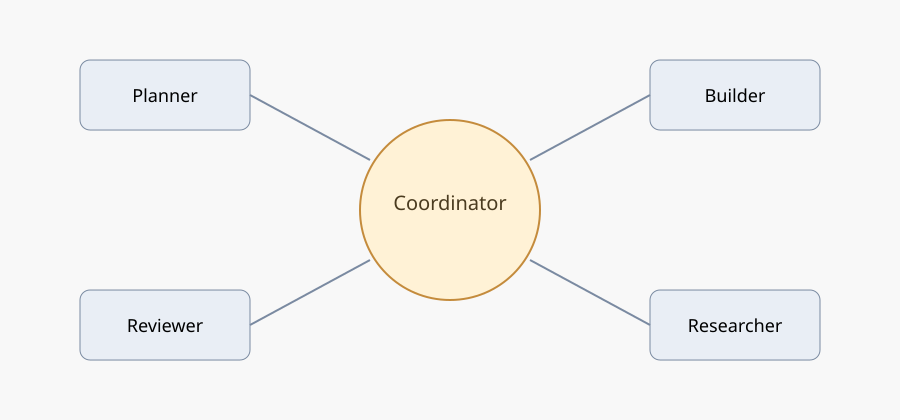
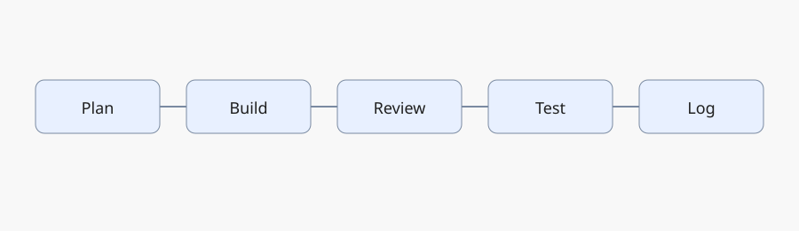
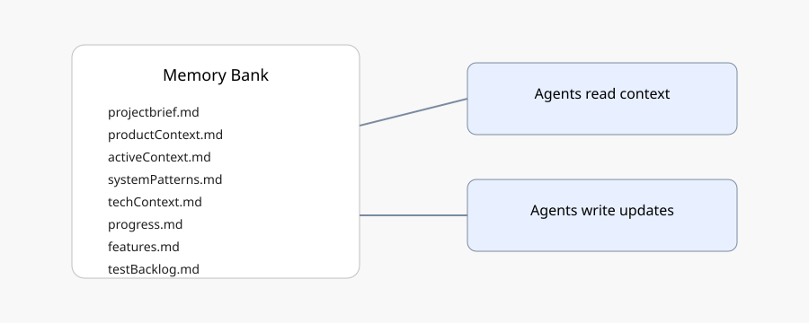
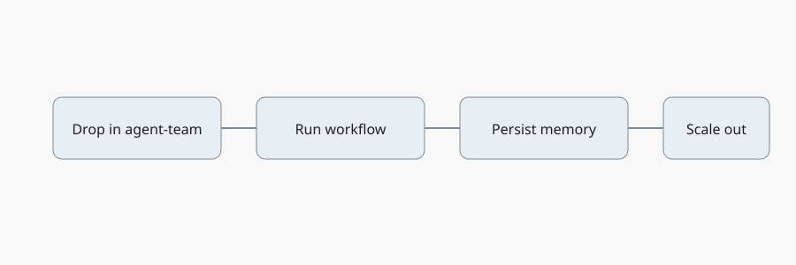
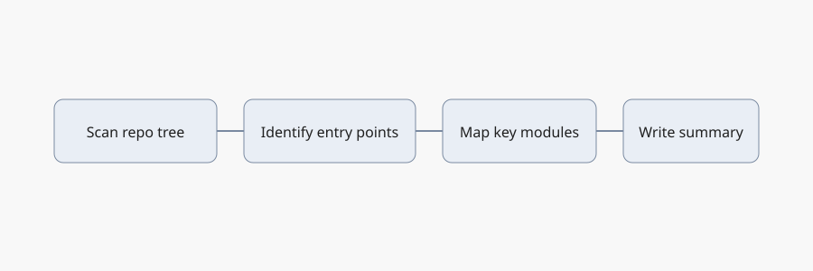

Why multi-agent teams
Consistency
Standard workflow across repos: plan → build → review → test → log.
Quality
Specialized roles reduce context overload and catch regressions early.
Continuity
Memory bank keeps requirements, decisions, features, and tests durable.
Team model

This is a virtual team of specialized agents. Each agent mirrors a familiar industry role so non‑technical stakeholders can reason about responsibilities.
Planner → Product/Program Lead
Clarifies requirements, success criteria, constraints, and acceptance tests.
Builder → Software Engineer
Implements changes, updates tests, and integrates with existing code.
Reviewer → Tech Lead / QA
Validates correctness, risk, regressions, and test coverage.
Researcher → Analyst / UX Research
Finds external constraints, docs, or precedent to guide decisions.
Coordinator → Eng Manager
- Routes tasks to the right specialist.
- Enforces approvals and tool policies.
- Owns workflow logging and memory updates.
Standard workflow

Safety and tooling
Tool calling with approvals
Read tools auto-approve; write/side-effect tools require explicit approval.
Traceability
Every change is logged and reviewed before completion.
Reusable template
Teams start from a standard agent-team scaffold and adapt per project.
Memory bank

We store context in files such as features.md and testBacklog.md, keeping requirements and tests aligned as work scales.
What it enables
- Fast onboarding for new contributors.
- Continuity across sessions and teams.
- Audit trails for decisions and changes.
Typical use cases
- Requirements snapshots per feature.
- Feature inventory + roadmap signal.
- Test coverage backlog for QA.
Apply to existing codebases

- Drop in the agent-team scaffold and memory bank.
- Run an initial codebase inventory (tree scan + key files).
- Summarize architecture in
systemPatterns.md. - Then run the standard workflow for each feature.
- Persist requirements, features, and test backlog automatically.
Why inventory first: agents need a map of the codebase (entry points, core modules, tests) to make safe, scoped changes.

Setup using the agent-team template
Start from the template
Clone the template repo and use it as a baseline for new projects.
git clone git@github.com:premald/agent-team-template.git
Apply to an existing repo
Use the initializer to drop in the agent team and memory bank.
./scripts/init-agent-team.sh /path/to/your-repo
Run the workflow
Use the full workflow for consistent plan → build → review → test.
npm run run:workflow -- \"your task\"
Set AGENT_TEAM_REPO_ROOT to the target repo so tools read/write the right files.
Case study: Snake game
Features added
- Player name prompt (session)
- High score tracking
- Mobile swipe controls
Operational gains
- Standard plan → build → review → test
- Memory bank updates on every run
- Test backlog grows with features
Scaling principles
- Define risk tiers and approval rules.
- Keep feature + test backlog in sync.
- Human QA sign‑off for critical paths; agents flag gaps.
- Use logs to support audits and onboarding.